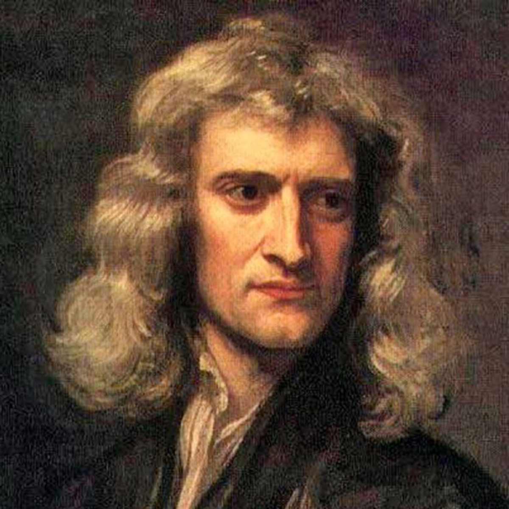

Sir Isaac Newton
One of the greatest mathematicians of all time.

Portrait of Newton at 46 by Godfrey Kneller, 1689
Here's a timeline of Sir Isaac Newton's life:
- 1642- Isaac Newton is born on Christmas Day in 1642 in Woolsthorpe, Lincolnshire, England.
- 1653- At the age of 5, Newton goes to the village school. About six years later he is sent to Grantham, a town seven miles away, to attend King's School. At first he does poorly, but after beating up a bully, he pushes himself to the head of the class.
- 1661- When Newton is 16, his mother brings him home from King's School to learn to be a farmer. Newton wants to study instead, and he is eventually sent back to prepare for college. He enrolls at Trinity College at Cambridge in 1661.
- 1665- While at Cambridge, Newton divides a notebook into 45 sections so he can make notes of things he wants to know about. He is so involved in studying that he sometimes forgets to eat. In 1665 he receives his bachelor's of arts degree.
- 1666- Cambridge closes down because of the plague in London. Newton heads home. He experiments with the origin of colors and the nature of gravity, and creates what we know as calculus today.
- 1667- Cambridge reopens in 1667, and Newton returns to study for his master of arts degree. He is given a fellowship, a special award where he is paid to study. In 1669 he is made a professor of mathematics.
- 1671- Newton builds an improved version of the reflecting telescope. His friend, Dr. Barrow, takes it to the Royal Society of London, the country's most famous scientific society. The members are so impressed they invite Newton to join.
- 1687- In 1684 a scientist urges Newton to write about how a planet moves in a certain orbit. His work turns into a 3-volume book known as Principia. Published in 1687, this work details the 3 laws of motion and the law of universal gravitation.
- 1703- In 1703 Newton is elected the president of the Royal Society of London. He publishes his writings on his early experiments with light in a book called Opticks.
- 1705- In 1705 Newton receives the highest honor in the land. He becomes the first British scientist to be knighted. He is now known as "Sir Isaac Newton."
- 1727- On March 20, 1727, Sir Isaac Newton dies at the age of 84. He is buried at the famous Westminster Abbey. Sir Isaac Newton will be remembered as a brilliant man whose work in math and science continues to influence the world today.